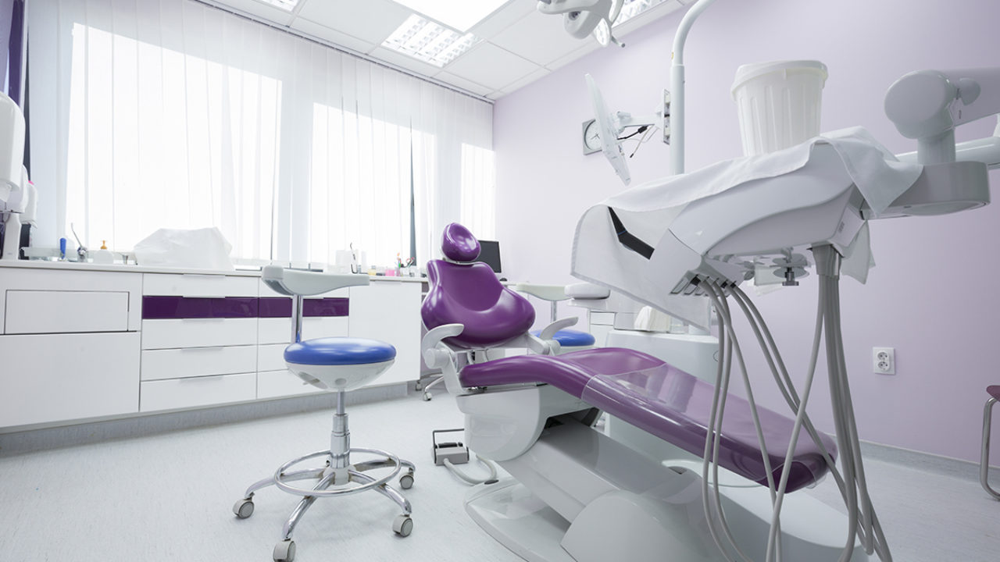
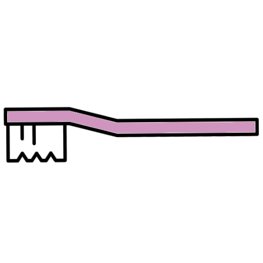

Inicio
Contacto
Servicios y Tratamientos
CoVid-19
Tweets de otros expertos

Previous
Next
Tweets del desarrollador
Follow @C57Double

¿QUIÉNES SOMOS?
Contamos con expertos de toda la provincia
Nuestras instalaciones están equipadas con la última tecnología
Más de 20 expertos trabajando codo con codo
Tenemos equipos de protección contra el CoVid-19